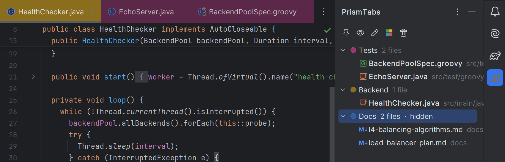
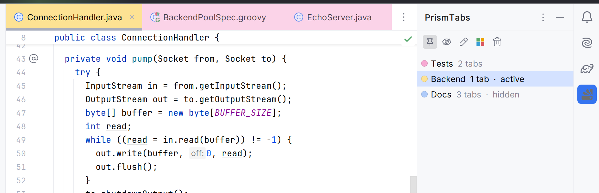
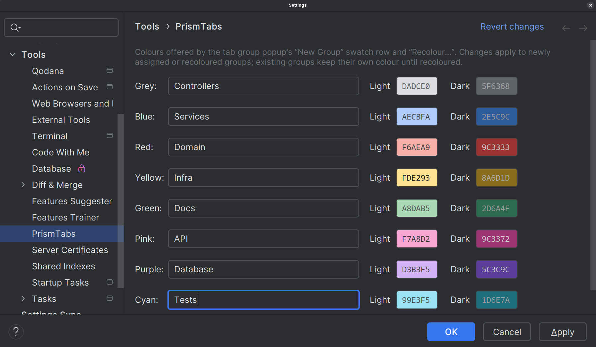
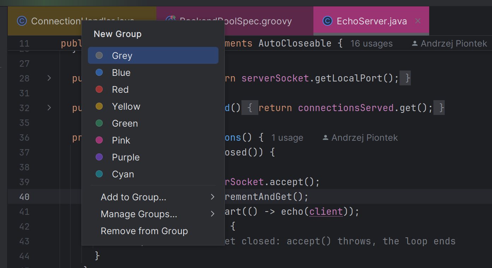

Colour groups,
built for your IntelliJ tabs
PrismTabs brings a familiar tab-colouring workflow to the JetBrains IDE family. Right-click any editor tab, pick a colour or a named group, and keep sprawling tab strips organised — with a dedicated tool window for managing every group at a glance.
Works in IntelliJ IDEA and every JetBrains IDE on the platform, from
2024.2 onward.


Everything you'd expect from browser-style tab groups, built for IntelliJ editor tabs
PrismTabs colours editor tabs directly through the supported platform API and gives every group a proper home in a dedicated tool window.
One right-click away Free
Right-click any editor tab for a colour swatch popup: 8 presets, "Add to Group…", or "New Group…" for a custom name.
Named, reusable groups Free
Group tabs under a name, not just a colour. Rename, recolour, or delete a group any time from the popup.
Active-group auto-join Pro
Mark a group active and every file you open joins it automatically — until you deactivate it.
A real tab groups panel Pro
The PrismTabs tool window lists every group with its colour, member count, and hidden state — expand one to the files it holds, open or closed.
Hide, then show Pro
Hiding a group closes its tabs and remembers them; showing it reopens every one, in order.
Survives restarts & renames Free
Assignments persist across restarts, along with the tabs a hidden group remembers, and follow a file through a rename or move.
Eight presets, tuned for both themes — and fully editable
Every colour ships with a light and a dark variant, measured for contrast on IntelliJ editor tabs rather than picked by eye — free to use as-is. With Pro, rename any preset or repaint it under Settings → Tools → PrismTabs.

Three steps, no configuration required
PrismTabs works out of the box with sensible defaults — the palette settings are there for when you want them, not because you need them.
Right-click a tab
Open the colour swatch popup from any editor tab's context menu.
Pick a colour or group
Click a preset swatch under "New Group" and give the group a name, or use "Add to Group…" to join one that already exists.
Manage from the tool window
Open "PrismTabs" on the right-hand stripe to rename, recolour, hide, or delete a group.

Built on the IntelliJ Platform, not one IDE
PrismTabs depends only on com.intellij.modules.platform, so it runs anywhere that module ships.
Start with everything. Keep what you need.
There's no plan to pick when you install — every copy of PrismTabs begins the same way.
-
Day 0
Install PrismTabs
Straight from the JetBrains Marketplace. No card, no licence key.
-
Days 1–14
Everything unlocked
The complete Pro feature set, free for everyone. Nothing is held back during the trial.
-
Day 15 onward
Free forever, or from $14/year
Subscribe to keep the Pro features, or carry on with the Free tier. Your groups and colours stay either way.
forever
Where every install lands once the 14-day trial ends — and stays, with no further expiry.
- Assign tabs to the 8 preset colours
- Unlimited named groups — create, rename, recolour
- List a group's files, open tab or not
- Assignments persist across restarts
- Follows files through renames and moves
Unlocked for everyone during the trial. Subscribe to keep these after day 14.
- Everything in Free
- The PrismTabs tool window
- Hide and show a group
- Active-group auto-join for newly opened files
- Custom palette editing
Install, click "Evaluate for free", and the 14-day trial begins — no card, no licence key. Subscriptions are billed annually through the JetBrains Marketplace, and letting one lapse simply returns you to the Free tier. Never a hard lockout, and nothing you've grouped is ever deleted.
Ready to keep your tabs under control?
Read the full manual for everything PrismTabs can do.